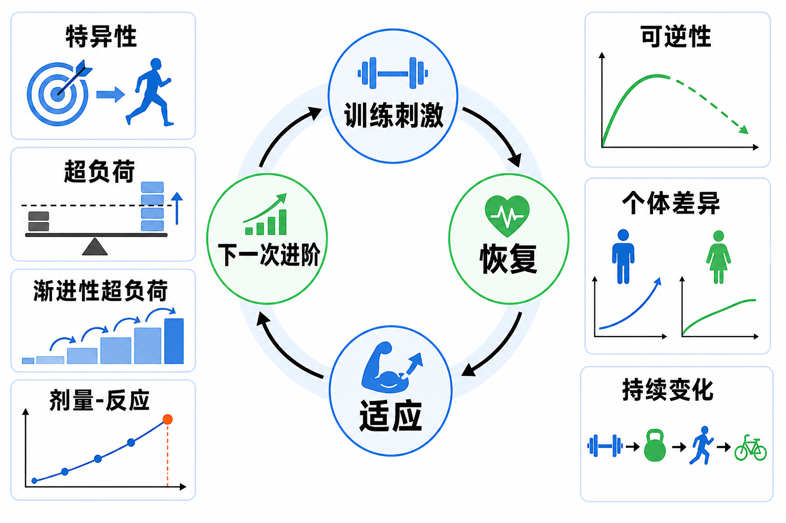

Day 29 · 训练适应基本原则
所有训练计划先过这一关：刺激够不够、方向对不对、能不能持续进阶。
一句话总结
训练适应像给身体升级软件：刺激必须像目标、强度必须超过旧水平、进阶必须可恢复；停训会倒退，每个人升级速度不同。

看图顺序：中间是训练刺激-恢复-适应-下一次进阶循环，四周是特异性、超负荷、可逆性、个体差异、持续变化与剂量-反应。
核心要点
- 特异性原则：身体最会适应它反复经历的刺激，练什么才更像什么。训练例子
字面意思
Specificity = 专一性。训练效果会贴着动作模式、能量系统、肌肉群、速度和关节角度走。
大白话
想考数学就做数学题，不能只练语文期待数学高分。想深蹲强，核心训练和跑步有帮助，但不能替代深蹲相关刺激。
考试怎么用
题干问“提升某专项表现”，先匹配动作、速度、供能和肌肉。练力量不等于自动涨耐力，练耐力也不等于自动涨 1RM。
马拉松目标要大量低到中等强度持续跑和阈值训练；卧推 1RM 目标要水平推、胸肩肘协同、高负荷神经输出和足够长休息。
常见误解❌以为“都运动了就都会进步”。✅其实进步会偏向你给身体的具体信号。
- 超负荷原则：刺激必须超过身体已习惯水平，才需要制造新适应。真实例子
字面意思
Overload = 超过常规负荷。可以来自重量、次数、组数、速度、密度、动作难度或总训练量。
大白话
身体像省电系统：平时能轻松应付，就不会花资源长肌肉、提高酶活性或强化神经驱动。
为什么影响训练
没有超负荷，训练只是在维持；超负荷太猛，则恢复跟不上，动作质量和伤病风险变差。
一个人长期用 20kg 做 3 组 10 次深蹲，主观用力很低，身体会把它当日常活动。若计划目标是增肌，可逐步增加重量、次数、组数或接近力竭程度。
训练含义超负荷不是每次练到趴下，而是给出“足以需要适应”的信号。RPE、速度下降、剩余次数和动作稳定性都能帮你判断刺激是否够。
- 渐进性超负荷：身体适应后，下一轮刺激要小步上调，不能永远停在同一档。底层机制
Progressive overload = 随适应逐步提高刺激。肌肉、神经、肌腱、心肺和能量系统适应速度不同，所以进阶要有台阶，而不是猛跳。
训练例子进阶方式 适合目标 风险点 加重量 力量、增肌 技术可能先崩 加次数或组数 增肌、肌耐力 总疲劳上升 缩短休息 密度、体能 峰值输出下降 提高速度意图 爆发、神经驱动 质量下降后收益变差 8 周计划不必每次都加重量。第 1-2 周稳技术，第 3-5 周小幅加量或加重，第 6 周维持或小降疲劳，第 7-8 周再推高质量输出，这比无脑每周加 10kg 更可靠。
常见误解❌以为渐进只能加重量。✅次数、组数、动作范围、速度控制、频率和休息时间都能变成进阶变量。
- 可逆性原则：训练带来的适应若不再被需要，就会逐渐消退。底层机制
Reversibility = 可逆性。身体维持组织和代谢能力需要成本；停训后，神经效率、肌糖原、线粒体酶活性和肌肉横截面积会按不同速度下降。
真实例子停训 2-3 周后，力量和耐力常开始可见下降；耐力相关适应通常更快受影响，最大力量会受神经熟练度、肌肉量和停训前水平影响。
训练含义旅行或忙碌期不需要追求进步，但要做最低有效维持量。每周少量高质量抗阻和短有氧，比完全停掉更能保住适应。
常见误解❌以为休息一周就全没了。✅短休常是恢复，长期停训才明显去训练化；关键是恢复后要有计划地重新爬坡。
- 个体差异：同一计划不会在每个人身上产生同样速度和幅度的适应。底层机制
个体差异来自训练史、年龄、性别、睡眠、营养、压力、伤病、肌纤维倾向、技术水平和遗传背景。计划是起点，反馈才是校准工具。
真实例子同样 3 组 10 次卧推，新手可能技术和力量都涨很快；训练多年者可能需要更精细的强度分配、总量管理和变式安排；恢复差的人可能先表现为睡眠差、关节不适、速度下降。
训练含义教练不能只复制模板。要看动作质量、主观用力、疼痛、睡眠、训练日志和表现趋势，再决定加量、维持、降量或换变式。
常见误解❌以为别人有效就一定适合自己。✅原则通用，剂量和路径需要个体化。
- 持续变化：长期训练需要变换刺激，避免适应停滞和重复压力累积。字面意思
持续变化不是天天乱换动作，而是在目标不变前提下，周期性调整负荷、次数、组数、速度、动作变式或训练重点。
大白话身体学会一条路线后，继续完全一样的刺激，升级信号会变弱；但每天换新动作，又让身体没有足够重复去变强。
训练例子深蹲目标可在主项稳定的同时加入暂停深蹲、前蹲、节奏控制或不同次数区间。变化服务目标，不能把训练变成随机菜单。
常见误解❌以为“肌肉混淆”越乱越好。✅有效变化要保留特异性，同时改变足够的刺激维度。
- 剂量-反应关系：训练效果随剂量变化，但不是越多越好。底层机制
剂量可以理解为总训练压力：强度、容量、频率、密度、动作难度和恢复成本共同决定。反应是力量、肌肉、耐力、技术或疼痛状态的变化。
关键判断剂量太低只能维持或无效；剂量适中能进步；剂量过高会让疲劳超过恢复，表现下降或伤病风险上升。最佳区间会随训练水平变化。
训练含义看周趋势，不只看单次训练爽不爽。若重量、速度、睡眠、疼痛和情绪连续变差，可能不是意志不足，而是剂量超过恢复能力。
考试锚点后续 FITT-VP、抗阻技术、OPT 模型和周期化，都是在回答“给多少剂量、用什么刺激、何时调整”。
- 八周计划模板：先定目标，再用原则检查每周安排是否合理。步骤
第一步，写清目标：力量、增肌、耐力、减脂或康复。第二步，检查特异性：动作、速度、供能是否像目标。第三步，安排超负荷：让刺激略高于旧水平。第四步，安排渐进：每 1-2 周只改一两个变量。第五步，保留恢复和变化：避免一直顶到极限。
案例想 8 周提高深蹲 5RM：主项深蹲每周 2 次，技术日较轻、强度日较重；每周小幅加重量或次数；第 4 或第 6 周根据疲劳做轻量周；辅助训练围绕髋膝伸展和核心稳定。
违反特异性错误若计划大部分时间都在慢跑、卷腹和随机器械循环，却想显著提高深蹲 5RM，就是方向错。它可能改善健康和耐力，但不够像深蹲力量目标。
常见误区
❌很多人以为训练原则是背诵题。✅其实它们是检查训练计划是否合理的工具。
❌很多人以为超负荷就是每次加重量。✅加次数、组数、速度、动作范围、密度和动作难度都可能是超负荷。
❌很多人以为变化越多越高级。✅变化必须服务特异性，否则会稀释目标刺激。
记忆口诀
“像目标，超旧量；小步加，会变强。停太久，会退档；人不同，剂量量。”
翻转卡复习
实操关联
- 增肌：保留目标肌张力，用重量、次数、组数和接近力竭程度小步进阶，不用每次换动作追新鲜感。
- 最大力量：主项动作要高度特异，低到中次数、较长休息、记录每组速度和技术稳定性。
- 耐力：用持续时间、频率、配速和阈值训练构成渐进，不要只用抗阻训练替代专项有氧。
- 减脂：训练剂量要能长期坚持，抗阻维持肌肉，有氧和日常活动提高总消耗。
- 康复：超负荷更小、更可控，先让组织重新适应，再逐步接近目标动作。
- 教练沟通：客户停训、睡眠差或疼痛上升时，先调整剂量，不要把所有下降都解释成“不努力”。